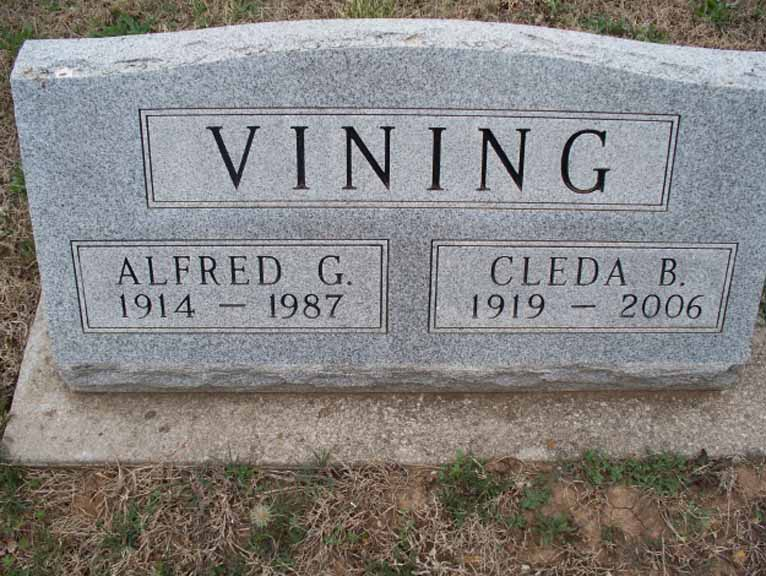
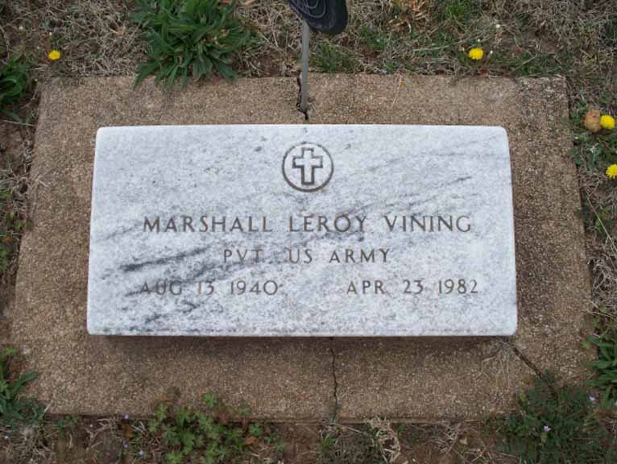

Documentation for Alfred Gilbert Vining and Cleda B. Lancaster
Death Data
Headstone for Alfred Gilbert Vining and Cleda B. Lancaster, in Robbins Cemetery, Fawn Creek Township, Kansas (from Find A Grave):

Gravestone for Marshall Leroy Vining, son of Alfred Gilbert Vining and Cleda B. Lancaster, in Robbins Cemetery, Fawn Creek Township, Kansas (from Find A Grave):
